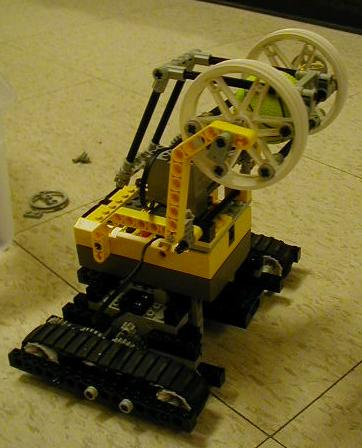

Laboratory Exercise 10
LSP 150: Computers & Society
Lehman College-- CUNY
18 November 2004
Dumptrucks and Basketball
The goal of today's lab is to move a small object or ball from the
starting zone to the target (or basket). There are many different
approaches to this problem (see below for description and pictures
of some ways to approach this).
Design requirements: This lab assumes that the two motors
are wired to output ports A and C (for dumpbot1.nqc and linebot1.nqc)
or that the robot uses a single motor as the Steerbot did from the
previous lab. The extra motor (for the dumptruck or playing
basketball)
should be wired to output port B. It should be attached to a
basket or lift that can hold a small ball.
Programs used: Today's lab uses steerbot1.nqc or dumpbot1.nqc, as well as linebot1.nqc.
Lab set-up: You should set up the bucket of balls next to the
wall, or you can use a small box if the top of the bucket is to high
for the lift of your dumptruck. You can place tape leading up to
the basket for the robot to follow, or use the proximity sensor of
Steerbot. Strips of other color tape can be added to
the approach to the basket (these can be used with the light sensor
to tell the robot when to shoot its basketball or drop its load).
Different Approaches
The design of the robot is completely up to you. In the
end, it must be able to carry and drop objects and move from
the start to finish zones (guided by either the light or
touch sensor). The
simplest is to use a lever (no motor attached) to drop the ball
in the basket when the robot bumps into a wall:
<>
Another approach is to build a lift that will bring the ball up
to the level of the basket:

|

|

|
You can also build a lift, like that described in the dumpbot
chapter
of the book. Here's a variant on that theme:
For more ideas, for possible arms and claws, see the Constructopedia
book in the Lego kit. Many of those
could be used to grasp and transport objects.
After you have decided on your design, consult with the TA, to get
any necessary parts. You can start building your robot now, or work
on the first program for a while, and come back to building the robot
later.
Start to Finish
Outside, there is a staging area with many small objects and a
start and finish zone. The first task for your robot is to move
an object from the start to finish zone (next to the basket). Upon
entering the finish
zone your robot should stop and celebrate (singing and dancing would
be appropriate).
This program can be done with a robot of standard design with a
light
sensor attached. You might consider modifying one of the earlier
programs that follows a line or flashlight. Before doing so, measure
the background level of light in the staging area, as well as any
tape lines you may follow or cross.
Carrying Objects
Now, write a program that will carry an object from the start to
finish zone and will drop the object after entering the finish
zone. Before doing this, you should complete your initial construction
of your object-carrying-apparatus (claw, arm, front-loader, etc).
Depending on the design of your robot, you can also try to deposit
the object in the basket or through the hoop.
This program should have an extra function called drop()
that makes your robot drop the object. This will get used again
for later programs, so, making this a function will same typing
later.
Finishing up for the Day
To get credit for this laboratory, you need to show and explain your
programs to Prof. St. John, as well as demonstrate that they run using
your robot.
We must be out of the computer laboratory by 11:50am. As such, if
you
are not ready to demonstrate your work by 11:45am, you can do so in the
next laboratory. Before leaving the room, make sure that all
computers
and monitors are turned off, that any paper and trash have been
removed, and that all chairs are returned
to their proper places. Also, make sure you pack up your IR tower
in
your shoe box, since they're difficult to replace.